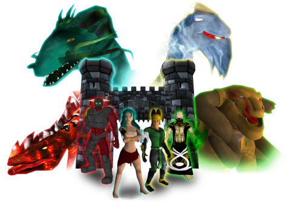

La création des Dragons
Dragon Master Spell Caster se déroule dans le monde magique de Nakiha. Ce monde fantastique fut longtemps sous le règne du Seigneur Dragon. Ce monde est constitué des éléments les plus puissants: la force de la Terre; la force irrésistible de l'Eau; la flamme intense du Feu et la force explosive de la Tempête. Les Dragons étaient la source de toute magie. Sous le reigne des Seigneurs Dragon tous les autres dragons furent conçus. Puis le pouvoir des Seigneurs fut réduit et ils durent retourner à leurs éléments.
Le Bannissement des Dragons
La fin de l'espèce humaine marqua la fin du règne des Dragons. Les dragons, impossible à dompter, sans peur et meurtrier, combattèrent l'homme pour la suprématie du monde. L'homme, le plus astucieux de toutes les créatures, utilisa la magie des dragons contre eux. Exploitant la force de la Terre, de l'Eau, du Feu et de la Tempête pour accélérer la course de l'homme et bannir les dragons dans l’inhabitable étendue déserte des grandes glaces.
L'homme, peureux du pouvoir qu'il venait de découvrir, recueilla dans quatre Livres Magiques les techniques pour contrôler les dragons et leurs tours de magie. Ces magnifiques livres furent incrustés des quatre principales règles du pouvoir de Nakiha. Le Livre de Talon, contenant les secrets de la Tempête magique, fut gardé par le riche royaume d’Arkhoniar. Le Livre de la Flamme Magique, contenant les furieux tours magiques du Feu fut remis à la sœur du royaume de Daeroviar. Le Livre de l'Ecaille, montrant comment utiliser la magie de l'Eau fut remis au large empire de Serengania. Enfin, le Livre de l’Os et des Mystères de la Terre Magique fut déposé dans un endroit sur par la sage nation de Andera.